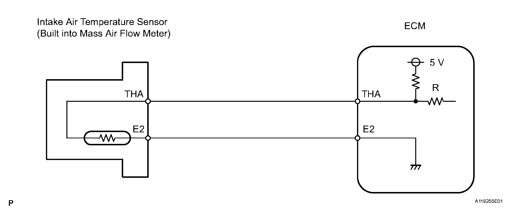

DTC P0110 Intake Air Temperature Circuit Malfunction; DTC P0112 Intake Air Temperature Circuit Low Input; DTC P0113 Intake Air Temperature Circuit High Input: Wiring Diagram
Fig 1: Intake Air Temperature Circuit Wiring Diagram

Courtesy of © TOYOTA, LICENSE AGREEMENT TMS1002